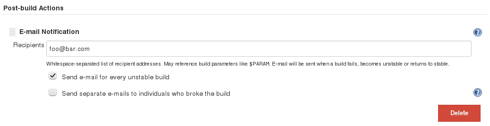

40 great Jenkins plugins in 40 minutes
2015-02-07
Jenkins
- most widely used CI in the world
Numbers
- 638 organization members on GitHub
- 375 committers
- 100K active installations with 300K nodes
- 3.2M installations of 1050 unique plugins
Which plugins should you use?
Dashboard View
- view implementation containing portlets (well, sort of...)
- easy to extend
Job Configuration History
- versioning of job and system configuration
Build Publisher
- sends builds to another Jenkins master over HTTP
- use cases:
- public facing instance for community projects
- aggregation of data among teams
Disk Usage
- periodically calculates disk space occupied by jobs
- beware of performance impact!

Embeddable Build Status
- exposes current build status as an image
Environment Injector
- manages environment variables for jobs and nodes
- use cases:
- set up clean environment for nodes
- inject variables based on user parameter values
- initialization before SCM checkout
- know environment variables used for a build
- inject environment variables from the evaluation of a Groovy script
Email Extension
- controls all aspects of email notifications
- provides extensive content, triggers and recipients options
- supports attachments
- supports pre-send scripts in Jelly and Groovy
Mailer
Timestamper
- adds timestamps to console output
CloudBees Folders
- organizes jobs into hierarchical folders (think file system)
- better grouping capabilities than Nested View and others
Build Timeout
- automatically aborts a build if it's taking too long
- usually works
Node Label Parameter
- allows you to dynamically select the node where a job should run (without having to change the job configuration)
- supports parallel builds
-
exposes 2 parameter types:
- node
- label

Workspace Cleanup
- removes data from the workspace before/after a build
-
use to:
- save disk space
- start builds with a "clean slate"
HTML Publisher
- publishes HTML reports to job/build pages

Multiple SCMs
- allows jobs to check out sources from multiple SCM providers
-
use cases:
- dealing with third-party libraries
- storing (f)tests separately from the application code
URL Trigger
- polls given URLs for changes and triggers a build after a change is detected
- only HTTP(S), other protocols included in XTrigger
- supports:
- plain text responses (regular expressions)
- XML responses (XPath)
- JSON responses (JsonPath)
- generic content (MD5)
- use cases:
- check if an artifact was deployed in a repository
Matrix Project
- supports multi-configuration (matrix) project type
- used to be a part of Jenkins core, now a bundled plugin
- essentially a parametrized job running all combinations of parameters
- use cases:
- release testing against several platforms
Matrix Reloaded
- rebuilds parts of matrix builds
- use cases:
- rerunning false negatives
- testing on a core subset of supported platforms
Matrix Combinations
- allows the user to dynamically choose combinations to run in a matrix job
- introduces a Matrix Combinations parameter type
Groovy
- allows for execution of groovy code
-
2 types of build steps:
-
groovy scripts
- run in the slave's JVM
-
like running
groovycommand with a script
-
system groovy scripts
- run inside master's JVM
- have access to all the internal objects of Jenkins and can alter its state
-
groovy scripts
Plot
- outputs simple charts (plots) from builds
- use cases:
- generating reports
Job Restrictions
- restricts how builds can be triggered and where they can run
- use cases:
- private nodes
- exclusively automatic builds
Ownership
- introduces concept of owners of jobs and slaves
- includes:
- ownership-based security (via Role Strategy and Job Restrictions plugins)
- email configuration
- summaries
- reasonable default assignments
- use cases:
- find out who is in charge of a job
- use cases:
- use cases:
- use cases:
- use cases:
- use cases:
- use cases:
- use cases:
- use cases:
- use cases:
- use cases:
- use cases:
- use cases:
- use cases:
- use cases: